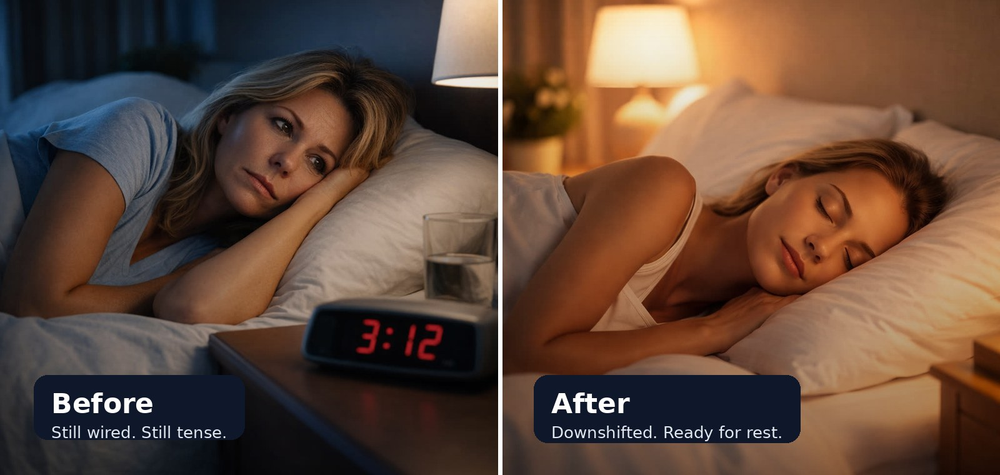

Sleep support works best when your body has a way to downshift from the stress and tension of the day.
This simple 3-minute reset helps calm your system, reduce physical tension, and prepare your body for a more settled state before rest.
Start the 3-Minute Downshift ResetNo signup. Just press play and follow along.
• The mind may be tired, but the body still feels “on”
• Stress patterns can keep muscles and breathing restricted
• Tension from work, screens, and daily demands can carry into the evening
Sleep support helps create the right environment. This reset helps your body move toward that state.
• Helps your nervous system downshift
• Reduces residual tension from the day
• Supports slower breathing and a calmer baseline
• Gives you a simple pre-rest routine you can repeat nightly
This takes just 3 minutes and helps your body shift from effort into recovery.
Start the 3-Minute Downshift ResetThe full BusyBodyz Reset System gives you short, guided resets you can use throughout the week to reduce tension, improve recovery, and build more usable energy.
Explore the Reset System →